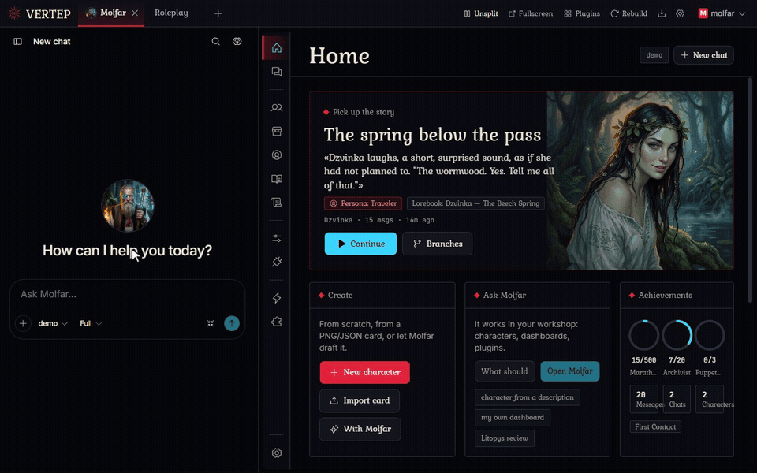
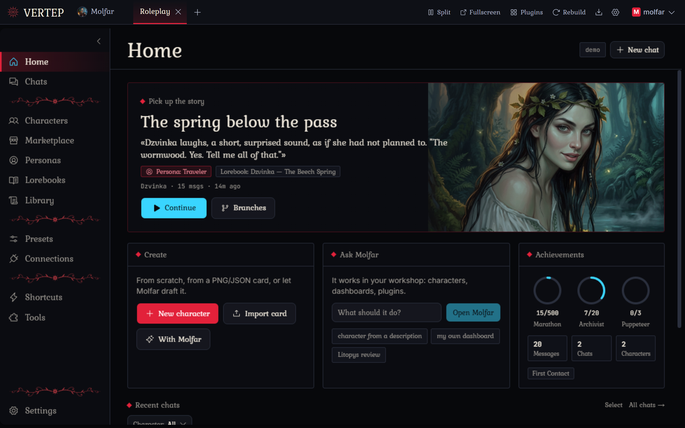
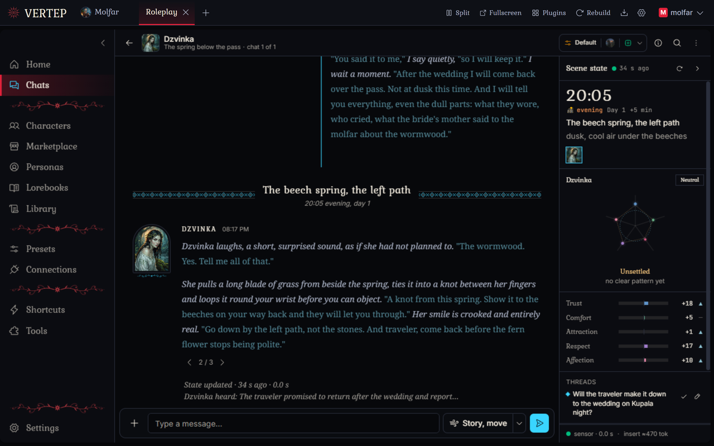
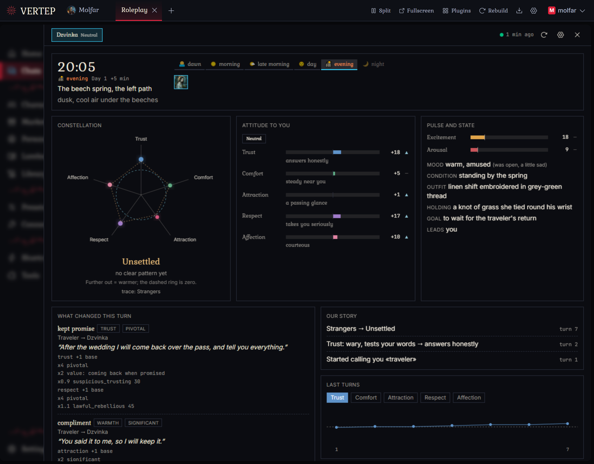
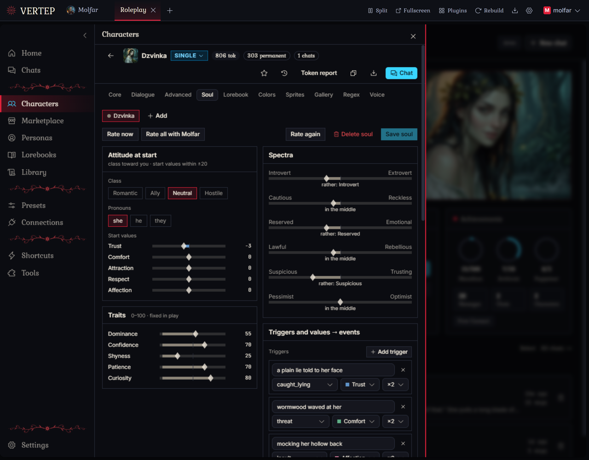
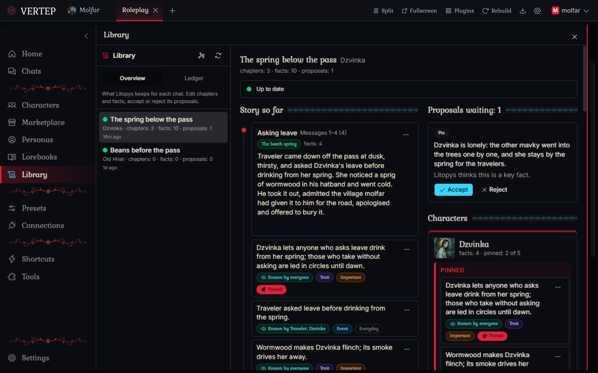
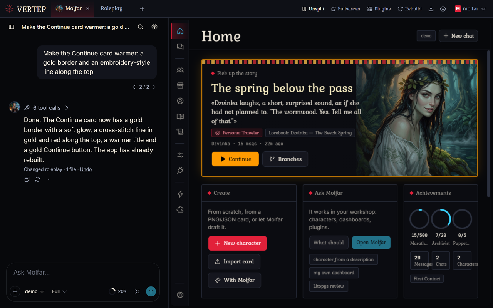

Molfar Vertep
Фронтенд для рольових ігор, що живе на вашому комп'ютері, з агентом всередині, який перебудовує його на ваше прохання.

Змінюйте застосунок проханням
Скажіть Мольфару, що вас дратує або чого вам бракує. Він змінить застосунок, екран перебудується за кілька секунд, і ви одразу побачите результат.
Кожну зміну можна скасувати
Після кожного запуску лишається git-контрольна точка. Один клік повертає код назад.
Перед великим він питає
Для великих або неясних прохань Мольфар пропонує варіанти. Захищені шляхи щоразу потребують вашого «так».
Ваші правки переживають оновлення
Нові версії зливаються з вашими змінами. Якщо вони конфліктують, ви обираєте: лишити своє, взяти нове або доручити Мольфару їх об'єднати.
Застосунки теж можуть його покликати
У застосунку Roleplay є кнопка «Запитати Мольфара». Нічого не надсилається, доки ви не натиснете «Надіслати».
Працює з малими безкоштовними моделями
Безкоштовні моделі з вікном 32k автоматично отримують легший промпт, тож Мольфар усе одно вміщається.
Застосунок Roleplay
Картки, персони, лорбуки, групові сцени й звичні речі, а ще кілька незвичних.






Ваше, вдома
Працює на вашому комп'ютері або телефоні. Модель приносите ви. Нічого не проходить через наші сервери, бо їх немає.
Працює локально
Windows, macOS, Linux, Android або Docker на домашньому сервері. Чати, персонажі й ключі лежать у простих файлах на вашому диску.
Будь-яка модель
API-ключі великих провайдерів і OpenRouter, вхід через підписку або будь-який OpenAI-сумісний сервер, зокрема на вашому власному комп'ютері.
Застосунки працюють у пісочниці
Чужий застосунок перед встановленням показує, чого він хоче: доступ до рушія, мережу, пакети. Оновлення, яке хоче більше, зупиняється й питає знову.
Синхронізація через ваш Google Drive
Нове у 1.1.0: переносьте робочий простір між комп'ютером і телефоном через власний Google Drive. Застосунок зв’язується з Google напряму, жодного нашого сервера посередині немає.
14 мов інтерфейсу
Серед них українська.
Вільне програмне забезпечення
AGPL-3.0. Відгалужено від Chrysalis Engine від ProjectChrysalis і відтоді розвивається власним шляхом.
Почніть за 5 хвилин
Завантажте, запустіть, додайте модель, встановіть Roleplay.
Завантажте для своєї системи
Візьміть файл зі сторінки релізів. Windows, macOS, Linux, Android або Docker.
Запустіть і створіть обліковий запис
У браузері відкриється сторінка одноразового налаштування. Обліковий запис локальний: він не покидає вашого комп'ютера.
Додайте модель
Налаштування > Підключення API. API-ключ, вхід через підписку або локальний сервер.
Встановіть Roleplay
Вітальний екран пропонує його одним кліком. Або відкрийте Мольфара й попросіть його про щось.
Спільнота
Molfar Vertep ще молодий і змінюється майже щодня. Помилки на цьому етапі звичайна річ: відкрийте issue, і помилку зазвичай виправляють у наступному патчі.
Discord
Ставте запитання, діліться тим, що зробили, дивіться, чим займаються інші.
Приєднатися до Discord